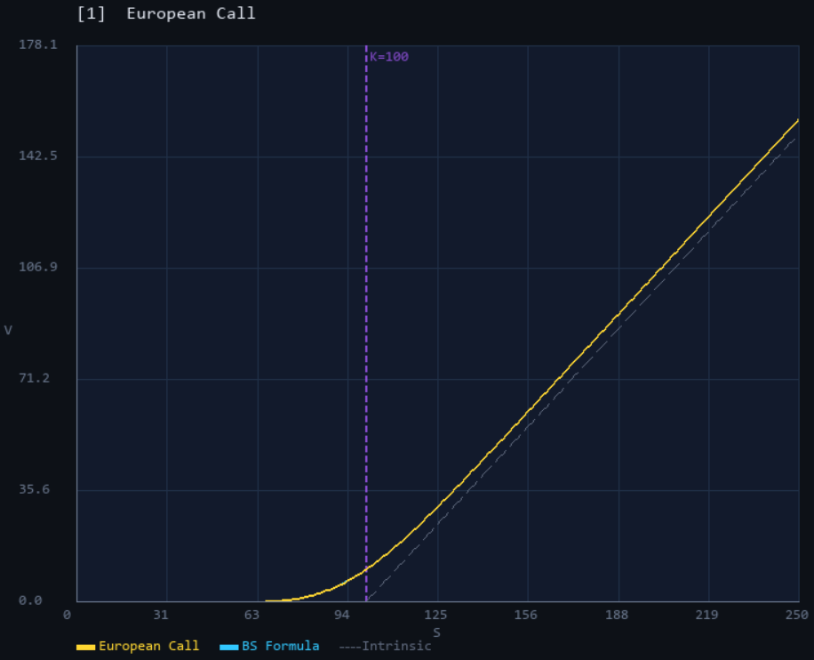
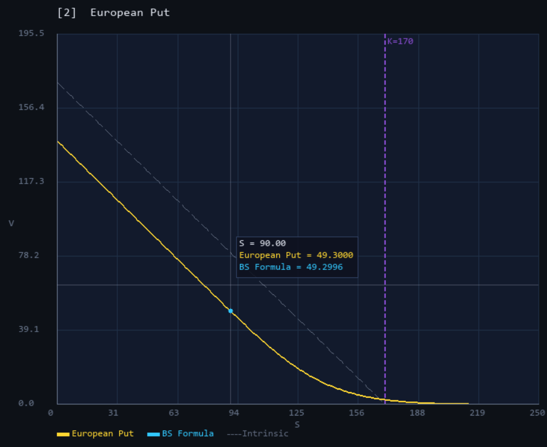
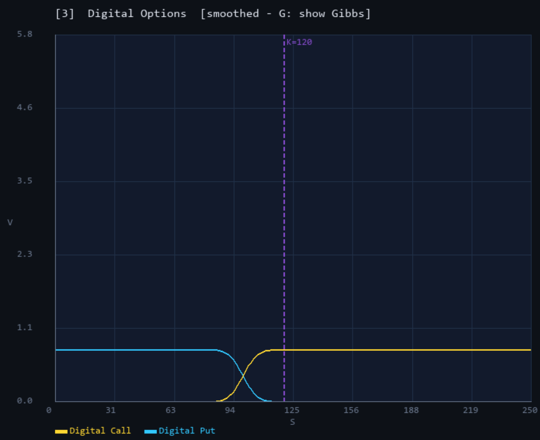
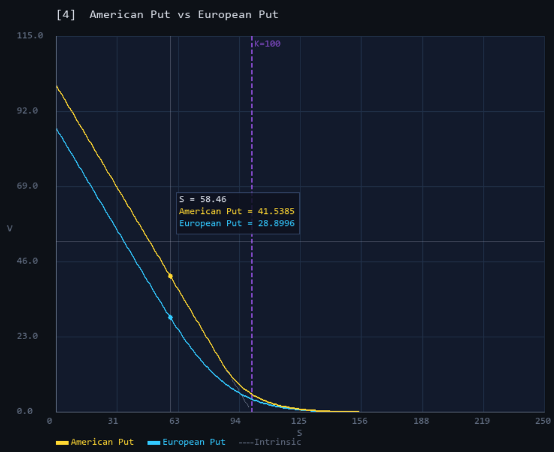
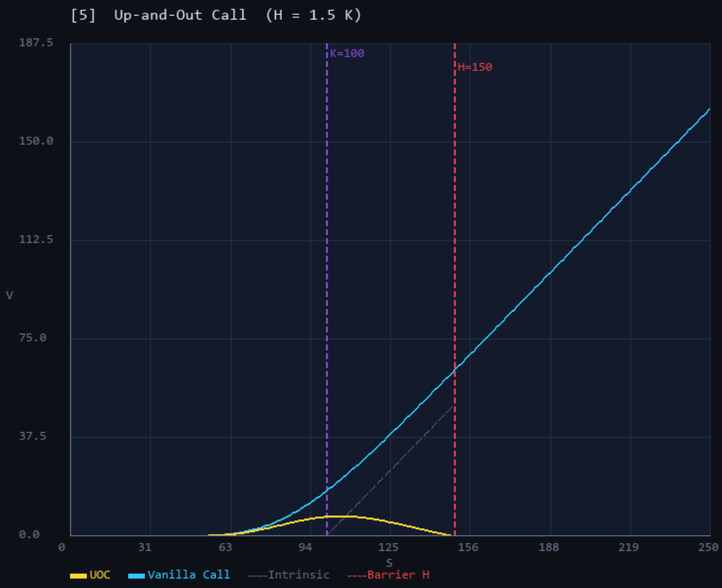
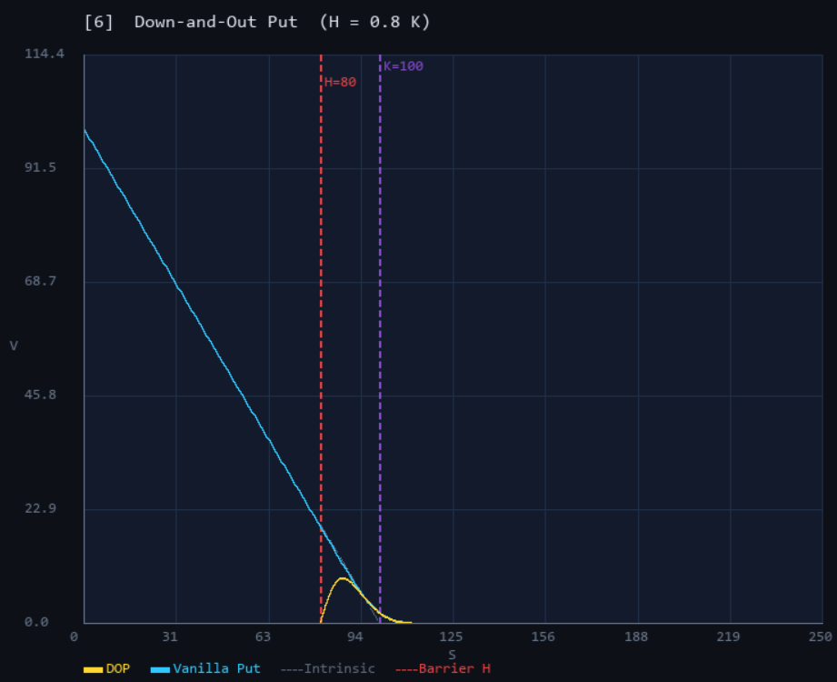

Black-Scholes
PDE Pricer
A C++ solver for the Black-Scholes PDE — two finite-difference schemes, full Greeks, exotic option pricing, and a real-time interactive SDL2 visualizer.
The fair value of an option satisfies a partial differential equation. Under Black-Scholes, any derivative $V(t, S)$ obeys a parabolic PDE in $(S, t)$ space with a terminal condition at maturity.
Solving it numerically gives prices and Greeks on the entire $(S, t)$ grid in one backwards sweep — no Monte Carlo needed. This project builds two independent finite-difference schemes from scratch, validates them analytically, extends them to exotic payoffs, and wraps them in an interactive visualizer.
Native S-space
Centred finite differences on $S_i = i \cdot \Delta S$ produce a tridiagonal system at each time step, solved in $O(N)$ via the Thomas algorithm. Coefficients grow with $S_i$, which increases round-off error at large spot values.
Log-price space (ReducedCN)
The substitution $x = \ln S$ yields a constant-coefficient PDE. The log-uniform grid gives finer resolution near the strike, where the option is most sensitive. Solution is interpolated back to S-space for output.
All five Greeks are computed from the solved grid. Delta, Gamma and Theta come for free — no extra solver calls. Vega and Rho use bump-and-reprice, two solves each. Theta is recovered directly from the PDE identity $\Theta = -\mathcal{L}[V]$, which is more accurate than finite-differencing in time.
| GREEK | DEFINITION | METHOD | COST |
|---|---|---|---|
| Delta $\Delta$ | $\partial V / \partial S$ | Central FD on solved grid | Free |
| Gamma $\Gamma$ | $\partial^2 V / \partial S^2$ | Central FD on solved grid | Free |
| Theta $\Theta$ | $\partial V / \partial t$ | PDE identity: $\Theta = -\mathcal{L}[V]$ | Free |
| Vega $\nu$ | $\partial V / \partial \sigma$ | Bump-and-reprice $\sigma \pm \varepsilon$ | 2 solver calls |
| Rho $\rho$ | $\partial V / \partial r$ | Bump-and-reprice $r \pm \varepsilon$ | 2 solver calls |
Phase 1 extends the pricer to four exotic payoff types, each requiring a specific boundary condition or solver modification — all validated against known analytical results.
Digital Call & Put
Cash-or-nothing payoffs. Payoff smoothing via sigmoid suppresses Gibbs oscillations at the strike discontinuity. Digital put-call parity error < 10⁻⁴.
American Put
Early-exercise via projection at each backward time step: $V_i \leftarrow \max(V_i, K - S_i)$. The gap above the European Put is the early-exercise premium.
Up-and-Out Call & Put
Knock-out at upper barrier $H > K$: both call and put are worthless if the spot ever crosses $H$. The UOC exhibits the classic barrier smile shape — price peaks between strike and barrier then collapses to zero. The corresponding knock-in variants (UIC, UIP) follow for free via $\text{KO} + \text{KI} = \text{Vanilla}$.
Down-and-Out Call & Put
Knock-out at lower barrier $H < K$: option expires worthless if the spot falls below $H$. The DOP price concentrates in a narrow corridor $[H, K]$. Same parity gives DIC and DIP at no extra cost — verified at machine precision.
An SDL2 window that runs the CN solver live and redraws the price curve whenever a parameter changes. Six display modes cover all implemented option types. Mouse hover shows a crosshair with exact $(S, V)$ read-off on every visible curve. Parameters — volatility, rate, maturity, strike — are adjusted in real time with keyboard controls, with the solver togglable between CN and ReducedCN.






$K = 100$, $T = 1$, $\sigma = 20\%$, $r = 5\%$, $N = M = 1000$. Errors are $O(\Delta S^2)$, consistent with Crank-Nicolson second order.
| METRIC | CN | BS (EXACT) | ERROR |
|---|---|---|---|
| EU Call — ATM price | 10.387 | 10.451 | 0.064 |
| EU Put — ATM price | 5.610 | 5.574 | 0.036 |
| Delta — ATM | 0.635 | 0.637 | 0.002 |
| Gamma — ATM | 0.01881 | 0.01876 | 0.00005 |
These checks cost nothing to compute and prove the scheme is internally self-consistent — not just accurate on one benchmark.
Exactly $e^{-rT}$ to within $10^{-4}$. Digital Call and Digital Put prices sum to the discount factor at every spot — the scheme preserves the parity without any explicit enforcement.
Verified at machine precision. A knock-out and its corresponding knock-in option must sum to the vanilla — a fundamental no-arbitrage identity that the finite-difference grid satisfies exactly.
Two finite-difference schemes (Crank-Nicolson + ReducedCN in log-space) solving the BS PDE on a $(S, t)$ grid. Full Greeks (Δ, Γ, θ, ν, ρ) via spatial FD, PDE identity, and bump-and-reprice. Benchmarked against closed-form analytical formulas.
Four exotic payoffs: Digital Call & Put with Gibbs smoothing, American Put with early-exercise projection, Up-and-Out Call and Down-and-Out Put with knock-out boundary conditions.
SDL2 real-time visualizer with 6 display modes, live parameter controls, mouse hover crosshair, and solver toggle (CN ↔ ReducedCN). Dirty-flag architecture separates PDE solve from rendering.
Real market data — implied vol extraction, volatility smile & surface construction, model validation vs live quotes, Dupire local-vol calibration. On hold pending a market data fetcher project.
SOURCE CODE
Full source code on GitHub — src/ (pricer), viz/ (SDL2 visualizer), Makefile, README with all screenshots.